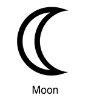
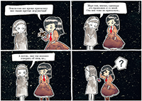

Луна́ — естественный спутник Земли. Самый близкий к Солнцу спутник планеты,так как у ближайших к Солнцу планет, Меркурия и Венеры,  мспутников нет. Второй по яркости объект на земном небосводе после Солнца и пятый по величине естественный спутник планеты Солнечной системы. Среднее расстояние между центрами Земли и Луны — 384 467 км (0,002 57 а. е., ~ 30 диаметров Земли).
Видимая звёздная величина полной Луны на земном небе −12,71m. Освещённость, создаваемая полной Луной возле поверхности Земли при ясной погоде, составляет 0,25 — 1 лк.
Луна является единственным астрономическим объектом вне Земли, на котором побывал человек. мспутников нет. Второй по яркости объект на земном небосводе после Солнца и пятый по величине естественный спутник планеты Солнечной системы. Среднее расстояние между центрами Земли и Луны — 384 467 км (0,002 57 а. е., ~ 30 диаметров Земли).
Видимая звёздная величина полной Луны на земном небе −12,71m. Освещённость, создаваемая полной Луной возле поверхности Земли при ясной погоде, составляет 0,25 — 1 лк.
Луна является единственным астрономическим объектом вне Земли, на котором побывал человек.
 |


{kind=link}
 мспутников нет. Второй по яркости объект на земном небосводе после Солнца и пятый по величине естественный спутник планеты Солнечной системы. Среднее расстояние между центрами Земли и Луны — 384 467 км (0,002 57 а. е., ~ 30 диаметров Земли).
Видимая звёздная величина полной Луны на земном небе −12,71m. Освещённость, создаваемая полной Луной возле поверхности Земли при ясной погоде, составляет 0,25 — 1 лк.
Луна является единственным астрономическим объектом вне Земли, на котором побывал человек.
мспутников нет. Второй по яркости объект на земном небосводе после Солнца и пятый по величине естественный спутник планеты Солнечной системы. Среднее расстояние между центрами Земли и Луны — 384 467 км (0,002 57 а. е., ~ 30 диаметров Земли).
Видимая звёздная величина полной Луны на земном небе −12,71m. Освещённость, создаваемая полной Луной возле поверхности Земли при ясной погоде, составляет 0,25 — 1 лк.
Луна является единственным астрономическим объектом вне Земли, на котором побывал человек. {kind=link}